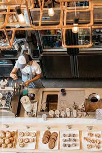
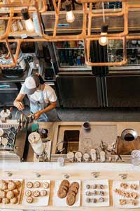

Вы попали в оазис для настоящих ценителей хорошего кофе и восхитительной выпечки! Здесь каждый гость отправляется в захватывающее путешествие ароматов и вкусов, наслаждаясь изысканными напитками и угощениями, приготовленными с любовью и профессионализмом.
Наша команда создает для вас уютную атмосферу, где каждый посетитель становится частью большой семьи.
Компания Кофейный рай была создана в 2022 году в Москве.
Началось всё с небольшой кофейни, а позже переросло в большую любовь к кофе.
Сейчас Кофейный рай - это сеть успешных кофеен по Москве, которая продолжает открывать свои двери в других городах.
Мы рады видеть каждого из вас, чтобы поделиться дружелюбной атмосферой, а, главное, вкусным кофе!